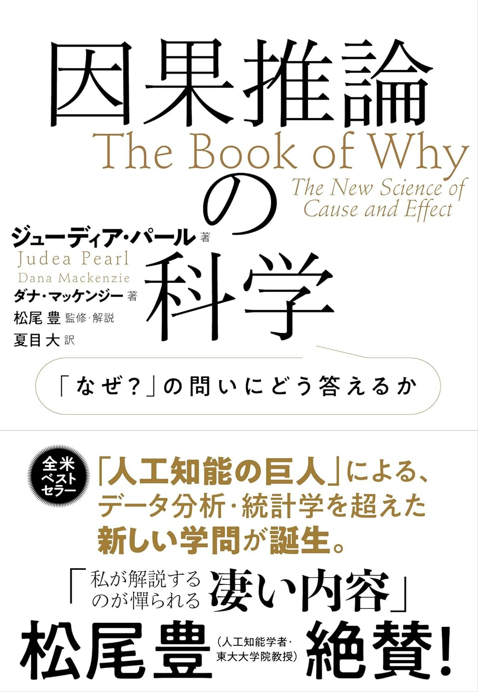

一般向け(数学)
一般向けに書かれた数学の本を紹介します。
数学ガール
結城浩著
高校一年生の夏、この本に出会って衝撃を受けた。「高校生の男子が可愛い女の子に囲まれて数学をする」だと？なんだこの本は！SFかよ！あほたれ！と思った。むろんどハマりし、ときにはお風呂に持ち込んで読みふけった(浴槽に落として二回買い直した)。内容は「フィボナッチ数列」を主な題材として、その過程で「テイラー展開」や「母関数」など大学数学の入り口へやさしく案内してくれる。知的好奇心をくすぐりたい全国の若者よ。全員嫁。間違えた。全員読め。
フェルマーの最終定理 サイモンシン著
300年以上未解決だった数学の問題を解決するまでのドラマ。実はかなりしっかりと書かれているのにめちゃくちゃ売れてる。数学の本がベストセラーになるってすごい。

因果推論の科学 「なぜ？」の問いにどう答えるか ジューディア・パール著
新しい分野である「因果推論」について一般向けに書かれた本。著者はこの分野を創始した人物の一人で、計算機科学界の巨人。統計学では答えられなかった「なぜ？」という疑問を徹底的に考え抜いた歴史や苦労が書かれている。我々の「因果関係」についての直感がいかに脆いものか、たくさんの具体例を使って学ぶことができる。自分も死ぬまでに一度はしっかり理解したい分野。